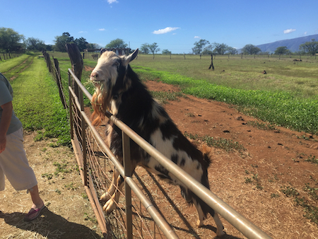
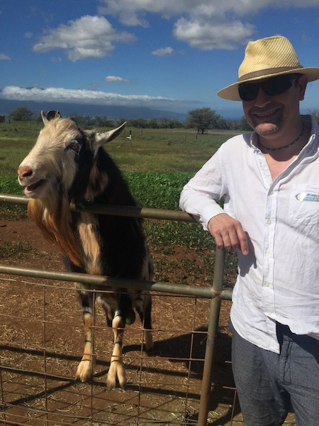

Hang Ten, Brah
Surf's up! Kevin and I took a detour to a little know farm up in the hills of Maui. Surfing Goat Farm. They are known worldwide for their incredible goat cheese. We toured, tasted, and met the "curators" of this amazing product.

Here's one purveyor of some really great cheese
Two old goats